Leave and inputs · 27 Nov · new: F7, a new look for Approve and Refuse
Leave and inputs: seven questions
Each question is one card: an example, a picture, and two choices. Pick one on each card and copy the answer line at the bottom. Tap a picture to see it bigger. Nothing is built yet. The long version of each question is further down the page.
F7 Your ask: a new look for Approve and Refuse. Which one?
Example: Cutter (a member) has a leave bid waiting for Wed 2 Dec. Saber (an admin) taps the day on the Leave War to decide it.
A: one switch. Top: waiting. Bottom: decided.B: two buttons. Top: waiting. Bottom: decided.Today. Top: waiting. Bottom: decided.
Same size and place as today, and pressing works as now: a second tap on the lit one puts the bid back to waiting. The look you pick would go everywhere you approve or refuse: this window, the day's list and Approvals.
The same on a desktop
ABToday
F6 Should every tap on a Leave War day open the same window?
Example: Cutter (a member) files LL on the Inputs page. Saber (an admin) then taps that day on the Leave War.
Today: "change it on the Inputs page". No Approve, Move or Delete.Proposed: the leave is a line with its buttons, the same as leave placed on the Leave War.
F1 Should the Leave War and the Inputs page become one page, "Availability"?
Example: Ghost (a member) wants leave in March. Today he picks between two pages, and each one opens a different window for the same leave.
☰ TALON↶ ↷ 🔔︎
MineSquadron
Leave War open: Mar–Apr, closes 20 Jan
Coming up
LL
9–12 Mar · 4 days Bid, pending
SD
17–18 Mar · Stand-down 6 pax · filed by Saber
+ Medical+ Input
Proposed, a rough sketch: one page. 1 "Mine" is his own list, "Squadron" is the Leave War's grid.
The first three steps are the same either way.
F2 On dates open for bidding, should leave always be a bid?
Example: In January the Leave War is open for March. Ghost (a member) wants 9 March off. Today he can skip the bidding by filing it on the Inputs page, where it stands at once.
LLLeaveMon 9 Mar✕
Duration
Whole dayAMPM
Bid
Proposed:1 on an open date the only button is Bid.
F3 Should "To review" replace the Personal Inputs list on the schedule?
Example: Grit (a member) files a dentist appointment at 14:00. Once you accept it, it shows on the Ground Programme and still sits in Personal Inputs too.
Proposed, a rough sketch:1 anything already placed has its own Reject where it sits. 2 "To review" holds only what still waits for you.
F4 When you decide bids, how do you usually go through them?
Example: Bidding has closed and 40 requests are waiting. Saber (an admin) sits down to decide them.
ApprovalsAll 12Same dates
GhostLL9–12 Mar · 4 daysAvail P 9ApproveRefuse
DrifterLL9–10 Mar · 2 daysAvail P 9ApproveRefuse
Proposed, a rough sketch: one Approvals list beside the grid. 1 "All" goes person by person; "Same dates" groups everyone who asked for the same days.
Recommended: both are in the one list either way. Your habit only decides which one it opens on.
F5 Should the Leave War let you add any type, a course included, without going to the Inputs page?
Example: Saber (an admin) taps Cutter's empty Wed 22 Jul to put him on a course. Today, after CSE, the window says "change it on the Inputs page" for the course's title and hours.
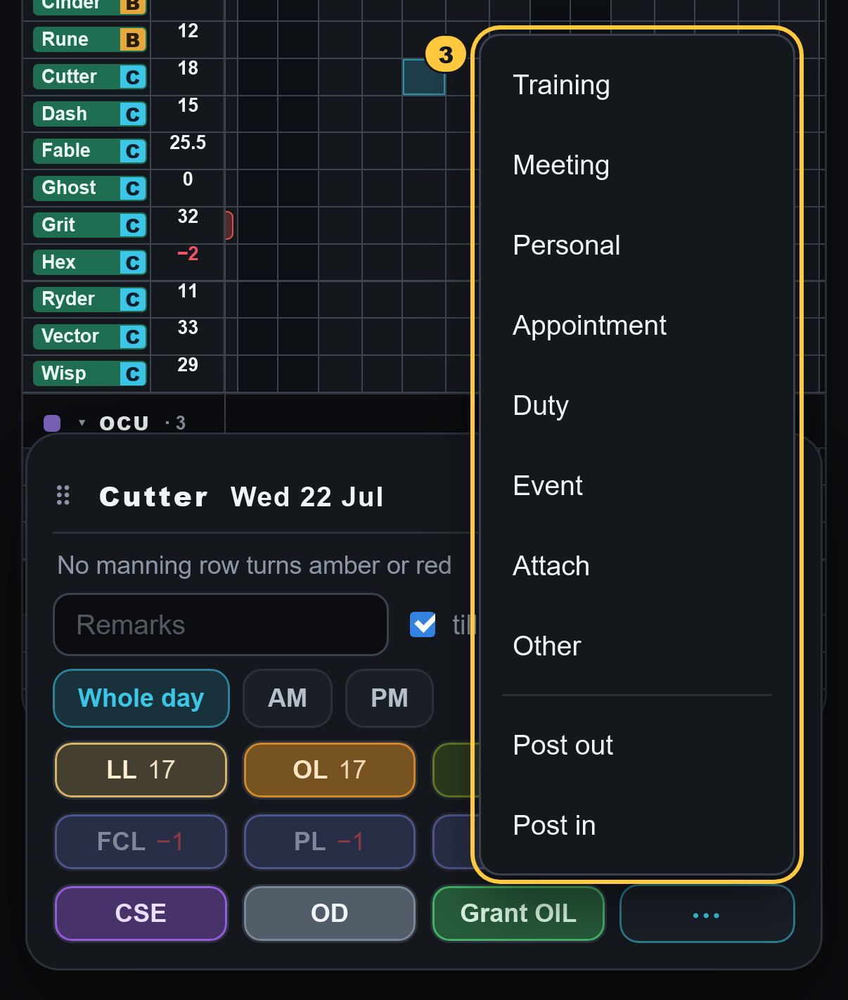
Proposed: ⋯ lists every type the Inputs page has.
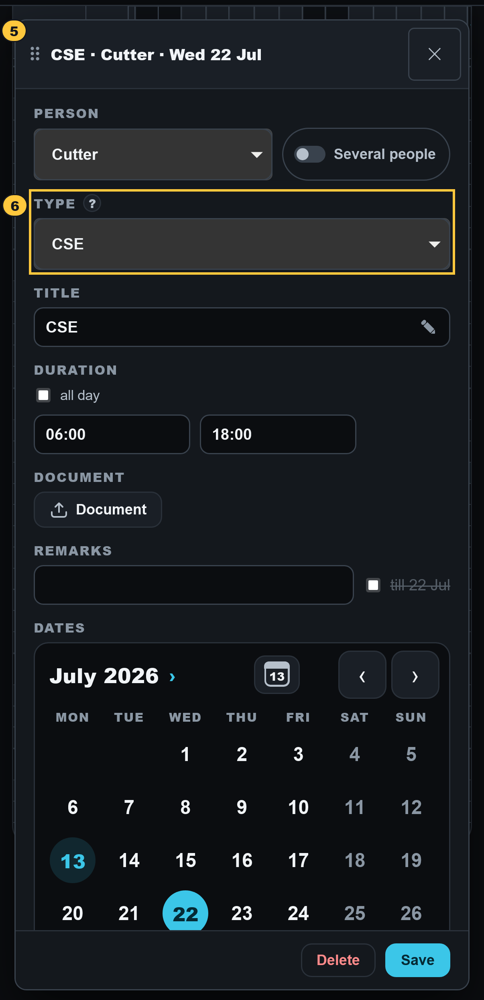
Proposed: after CSE, the course's own window opens right there. Its Type stays a dropdown, as you said.
Your answer line, to paste back in the chat:
Pick one choice on each card.
Older questions B to E and 1, 2, 5, 7 are still open further down. Add them to the line if you want.
The long version: every question in full
NewF6 Your question: the Leave War's window, made one standard. Today a tap on a day opens one of six different windows, or nothing, and the same leave gets different buttons depending on where it was filed. Proposed: one window every time, a line for each thing on the day with the buttons you may use, the adding part below. Recommended: yes, as step 1 of F1.
Your clean sheet: how we would design leave and inputs from scratch. Fable and Astra each answered on their own, then read each other's answer and agreed. Four questions:
F1 How far to go: the whole new design, one home called Availability, built in steps? Recommended: yes, the whole design.
F4 Deciding bids: one man at a time, or everyone asking for the same days together? Recommended: both, in one list.
F5 Adding LL, OL, CSE from the Leave War, your brainstorm: the war keeps its buttons, ⋯ reaches every type, and a course's own window opens right there (the Type dropdown kept, as you said)? Recommended: yes, as drawn.
The earlier questions: A (the direction) is now F1. B to E and 1, 2, 5, 7 still stand whichever you pick, since the first steps are the same. Question 3 (the shared mark): both readers now recommend B, no mark in the box.
Still open from earlier, the same whichever stop you pick in F1:
Answer by letter and number, for example "F1–F4 as recommended", or tell me which to change.
Your question
F6 · One Leave War window, whatever is on the day
When: every tap on a day of the Leave War. Saber deciding a bid, granting OIL or checking a man's course; a member looking at his own day or a colleague's leave. Many times a day.
You asked: some windows show the leave buttons and CSE · OD · Grant OIL · ⋯, some none. Are we standardising, so things entered on the Inputs page can be changed here too? Yes. First, every kind of day tapped on the real app today, as Saber and as Ranger:
The day tapped
What opens today
What it shows
Saber, an admin, on Cutter's row
Empty: open for bidding, not open, or before today
The leave window
Leave buttons, Duration, Remarks, CSE · OD · Grant OIL · ⋯
His leave placed on the Leave War, pending or approved
The leave window
All of the above, plus Approve · Refuse · Move · Delete
His leave filed on the Inputs page
The leave window
"LL · Whole day · change it on the Inputs page". No leave buttons, no Approve, Move or Delete
A medical
The leave window
"change it on the Inputs page", no leave buttons
An overseas duty, a course or an Other
The leave window
"change it on the Inputs page", leave buttons kept
Morning leave from the Inputs page
The leave window
The afternoon only
An OIL award
The leave window
Grant OIL becomes "FO · a day", its reason and who gave it at the foot
Two things on the day
Another window, the day's list
A card each with its buttons. No leave buttons, no CSE · OD · ⋯
A group leave from the Inputs page
The leave window
As his own leave from the Inputs page
A day after a posting out
Another window, the posting
Its date, where he went, Undo post out, "Place leave or OIL here instead…"
Ranger, a member
His own empty day, open for bidding
The leave window
Leave buttons, CSE · OD · ⋯ (no Grant OIL)
His own day not open, or before today
Another window, "Bidding is closed"
CSE · OD · ⋯ and "Open the Inputs page". No leave buttons
His own pending bid
The leave window
Move · Delete
His own approved leave
Another window
Remarks and Document only
His own leave filed on the Inputs page
The leave window
"change it on the Inputs page", no leave buttons
Another man's empty day or his leave
Nothing
Another man's overseas duty
Another window
"Change it on the Inputs page, not here."
So today: six different windows, nothing at all on two kinds of day, and the same leave gets Approve, Move and Delete or none, depending only on where it was first filed. The shaded rows are the odd ones out.
The standard, in five rules (the clean sheet's "what you may do follows who you are and the thing, never the page"):
One window, every time you tap a day.
At its top, a line for each thing on the day, whatever page it was filed on, with the buttons you may use on it: Approve · Refuse on leave (an admin), Move, Delete. Its › opens the thing's own window, with its dates, people and papers: the same window as on the Inputs page and the schedule. "Change it on the Inputs page" goes everywhere.
Below, the adding part, as today: Remarks, Duration, the leave buttons, CSE · OD · Grant OIL · ⋯. On the day's own leave its button is lit, and a tap on another changes its type. No leave buttons over a medical.
Who you are decides, not the page. A member has no Approve, Refuse or Grant OIL, and moves or deletes only his own. On another man's row he sees the lines only, read only, with nothing to add.
No special windows. A member's day not open for bidding gets the same window, his leave there recorded as approved (your F2). A day after a posting out shows the posting as a line, with leave and OIL below.
Each pair below: today on the left, the standard on the right, on your iPhone's size. The dashed yellow outline marks what is new. The desktop pictures are in the fold under them.
Saber, an admin
Today, a pending bid. The bid's buttons sit in a row of their own, with no box saying what the bid is.Standard.1 The bid is a line: its box, "Pending", who placed it, and its buttons. The commonest case barely changes.
Today, leave filed on the Inputs page. "Change it on the Inputs page", and the leave buttons are gone.Standard.1 Exactly what leave placed on the Leave War gets: Approved · Refuse · Move · Delete, and LL lit. This is your question's answer.
Today, a medical.Standard.1 The medical as a line; › opens it. No leave buttons, since leave can't go over a medical. A medical stays the man's own to file.
Today, an overseas duty.Standard.1 Move and Delete on the line. A course and an Other look the same.
Today, an OIL award. Grant OIL turns into "FO · a day", and the award's details sit at the foot.Standard.1 The award is a line with Edit… and Delete, as the day's list has it. Grant OIL stays Grant OIL.
Today, two things on the day. A different window: no leave buttons, no CSE · OD · ⋯.Standard.1 Two lines in the same window, the adding part below.
Today, a group leave.Standard.1 Everyone named on the line, and your "Change · 3 pax · Cutter".
Today, a day after Diesel posts out. The posting opens; leave or OIL is one more tap away.Standard.1 The posting is a line; › opens it (its date, where he went, Undo post out). Leave and OIL are right below.
Ranger, a member
Today, his day not open for bidding. A note and "Open the Inputs page".Standard.1 The same window as any day. His leave here is recorded as approved, so the buttons are solid, not a bid's dashed look (your F2).
Today, his own approved leave. Remarks and Document only.Standard.1 His leave as a line, no Approve or Refuse. › opens it to change it, as he can on the Inputs page today.
Today, Cutter's leave, tapped by Ranger. Nothing opens.Standard.1 The line, read only, nothing to add. Another man's overseas duty the same, in place of "Change it on the Inputs page, not here."
The same on a desktop
Today: leave filed on the Inputs page.Standard.Today: two things on the day.Standard.Today: a day after a posting out.Standard.Today: a member's day not open.Standard.Standard: a group leave.Standard: another man's leave, read only.
What it changes from your rulings: leave filed on the Inputs page lost its leave buttons on the Leave War (31 Oct), and now gets them back with Approve, Move and Delete; a member's own approved leave opened only its remarks; a member's day not open showed the "Bidding is closed" note; a day after a posting out opened the posting first; another man's leave opened nothing. Leave of several days keeps its "All 2 days · Mon 7" choice as today. The words on the lines are drafts: a fresh reader checks them before anything is built.
Recommended: yes, this standard, built as step 1 of F1 (the one window). It is the same whichever stop you pick in F1.
New · clean sheet
F1 · How far to go: one home called Availability
When: every day, for everyone. A member files a medical on his phone, the admin decides bids in January, the scheduler replans an hour before publishing.
The idea. The Leave War and the Inputs page become one place, Availability. A leave, a medical, a course or a duty is one thing, entered once, with one window that works the same everywhere. A bid stays the same thing when it is approved: it just turns from pending to approved. The schedule stays your working page and opens the same window. Their words for it: "If you can see it, you can open it, and it behaves the same wherever you opened it."
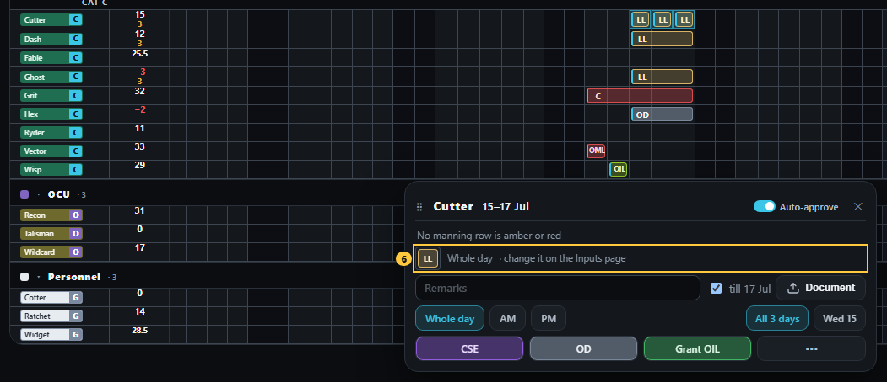
Today, the Leave War: a leave filed on the Inputs page reads "change it on the Inputs page".
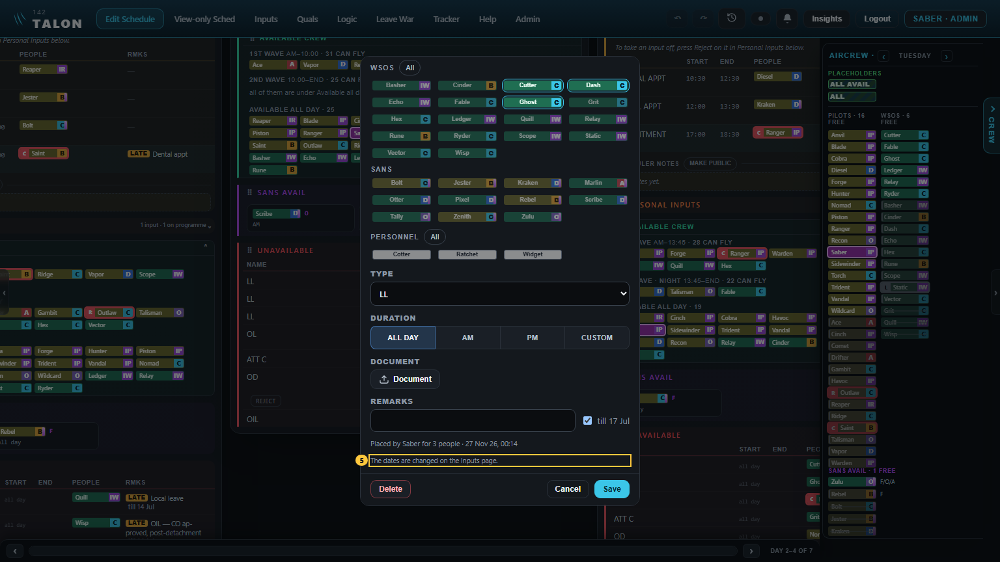
Today, Edit Schedule: the same leave opens a third window, without its dates.
The sketches
Rough layouts in the app's look, to show where things sit. Not finished drawings: each step is drawn on the real app before it is built. The numbered amber marks are the new parts.
SquadronMineMedicalSANSBalancesOILLeave War · Mar–Apr · closes 20 Jan‹ Mar 27 ›+ AddApprovals 12
8 M9 T10 W11 T12 F13 S14 S15 M16 T17 W18 T19 F
Req P8888888888
Avail P119109109109101112121212
CutterLLLLLLLLSDSD
GhostLLLLLLLLSDSD
DashATT CSDSD
RangerODODODOILSDSD
HexCSECSESDSD
DrifterLLLLSDSD
LL dashed: a bid, pending LL solid: approved SD a stand-down for six, lit together because one box was tapped
ApprovalsAll 12Same dates
GhostLL9–12 Mar · 4 daysAvail P 9 · 10 withoutApproveRefuse
DrifterLL9–10 Mar · 2 daysAvail P 9ApproveRefuse
CutterLL9–12 MarApproved · Saber
RangerOIL16 Mar · 1 dayAvail P 12ApproveRefuse
8 more ↓
Sketch 1 · Availability on a desk, the admin deciding bids. In the top bar Availability takes the place of Inputs and the Leave War. Inside it, the Leave War's grid, with the requests beside it. 1 "Leave War" stays as the name of the bidding period. 2 Approvals opens beside the grid, never on another page. 3 Manning counts pending bids as today; with Ghost's request picked, his days also show the figure without him (10), so you see what a refusal gives back before you press it. 4 A decided request stays where it was for that visit, so the buttons don't move under your hand.
☰ TALON↶ ↷ 🔔︎
MineSquadron
Leave War open: Mar–Apr, closes 20 Jan
‹ March 27 ›
MTWTFSS123456789101112131415161718192021
green top: open for bidding
Needs you
ATT C
Today · Whole day Add your chit
Coming up
LL
9–12 Mar · 4 days Bid, pending
SD
17–18 Mar · Stand-down 6 pax · filed by Saber
+ Medical+ Input
Sketch 2 · Availability on your iPhone, a member.1 It opens on his own list, with the month he knows; "Squadron" is the grid. 2 What others filed for him shows too: the stand-down Saber filed for six. Filing a medical never waits for the whole year to load.
☰ TALON↶ ↷ 🔔︎
SDStand-downThu 17 – Fri 18 Mar✕
People
CutterGhostDashRangerHexDrifter
Change 6 paxCutter
Dates
17 Mar → 18 Mar
Duration
Whole dayAMPMTimes
Means
AwayAttending
Remarks
Recalled? Change Cutter only.
Papers
⤒ Documenteach man's own
DeleteSave
Sketch 3 · The one window, the same from every page. Opened from the grid, the member's list or the schedule, it holds the same things and lets the same person do the same things. 1 Your "Change · 6 pax · Cutter", on every page. 2 One way to say "when": whole day, morning, afternoon or hours. On a desk the same parts, in the same order.
THU 17 MAR· Draft
⠿ UNAVAILABLE
SDall dayCutterGhostDashRangerHexDrifterStand-down till 18 Mar
Sketch 4 · Edit Schedule, a day (question F3).1 A group is one row with everyone on it; tap it and the same window opens, dates included. 2 An item already placed carries its own Reject. 3 "To review" holds only what still waits for you, so it is usually short or empty; rejected ones stay findable behind a filter. Unavailable keeps its name.
How far: three stops on one road
1 One window from all three pages, dates and "when" in it
2 Groups done properly: one row, "Change · 6 pax · Cutter", no quiet splits
3 One way to say "when" everywhere
Smaller stop: the fix you saw as A
4 A bid and its leave become one thing. No page you know moves.
Middle stop
5 Availability: Mine, Squadron, Approvals beside manning. The Leave War and Inputs tabs fold into it.
6 "To review" on the schedule
The whole design (recommended)
Steps 1 to 3 are the same whichever stop you pick, so nothing is lost by starting now. Each step is drawn for you first and checked in the running app.
What each stop still leaves confusing:
Smaller stop: two places to choose between when filing; a bid and its approved leave stay two different records, so their odd cases get patched one by one (a member's change on the Inputs page quietly changing what an admin can do on the Leave War); approvals a page away from the manning; the schedule's second list.
Middle stop: the record problem is gone, and nobody relearns a page. Still two places to file, approvals apart from the manning, the second list.
The whole design: members relearn one page, once. The biggest change the app has had: leave balances and OIL run through it, so steps 3, 4 and 5 are high risk and get full checks.
What it changes from your rulings: the Leave War and Inputs as separate pages (and the Inputs page opening on its calendar); the Personal Inputs list (F3); an overseas duty or a course whole days only on the Leave War (question D); the "box marked shared" (question 3). On the new platform: nothing needs an outside service, but saving a group change all at once and keeping a man's paper private must be proven in the hosting trial. Another person's change shows when the app next checks, not the instant it is saved.
"What changed since I last looked": Astra wanted a new mark on each day, Fable none. Both missed that the changes window's "New to you" tab already lists every change someone else made, inputs and the Leave War included, with a gold dot on each day. So nothing new is built; the check is that every absence change shows up there.
Recommended: the whole design, in these six steps. Step 1 is drawn for you first; you can stop at either stop later and the squadron is better off at each one.
New · clean sheet
F2 · On dates open for bidding, leave is always a bid
When: in January the Leave War is open for March. Ghost wants 9 March off. Today he can bid on the Leave War, or file it on the Inputs page, where it stands at once without waiting for the bids to be decided.
LLLeaveMon 9 – Thu 12 Mar✕
Duration
Whole dayAMPM
Balance
War bal 14.5 → 10.5
Bid
A date open for bidding.1 One button, Bid. There is no second button beside it to enter the leave as already approved.
LLLeaveMon 18 – Tue 19 May✕
Duration
Whole dayAMPMTimes
Document
⤒ Document
Record approved leave
Any other date.2 Leave approved by word of mouth, entered by the member and standing at once, as today on the Inputs page.
The date decides, not the page. On an open date, leave approved by word of mouth is entered by an admin. A range that crosses open and closed dates shows which part is a bid before it is sent.
What it changes: today a member can file leave on the Inputs page on an open date and it stands at once (your rulings so far spoke only about closed dates).
Recommended: yes. One rule a member can predict, and no way round the bidding beside it.
New · clean sheet
F3 · "To review" in place of the Personal Inputs list
When: every day of planning. Today a commitment that is already on the Ground Programme or under Unavailable still sits in Personal Inputs too, and the schedule says "to take an input off, press Reject on it in Personal Inputs below".
Proposed (sketch 4 above): an item already placed carries its own Reject on its own row. A short "To review" list holds only what still waits for you, usually short or empty. Rejected items stay findable behind a filter and can be accepted again. Medicals and leave never go through it; they stand as today.
Recommended: yes. You act on a thing where you see it, never on its copy further down.
New · clean sheet
F4 · Deciding bids
When: bidding has closed, and you sit down to decide forty requests.
Do you usually go person by person, or look at everyone who asked for the same days together? Both readers would offer both in the one Approvals list (sketch 1), with a "Same dates" filter. Your habit decides which it opens on.
Recommended: both in one list, opening on whichever you tell us you do most.
New · your brainstorm
F5 · Adding LL, OL, CSE from the Leave War, in the redesign
When: Saber, an admin, has the grid open and taps Cutter's empty Wed 22 Jul to put him on a course, or on leave. It happens many times a week.
Your answer: the Type dropdown stays as it is. Your question was the Leave War's window, so here it is, drawn on the real app as Saber.
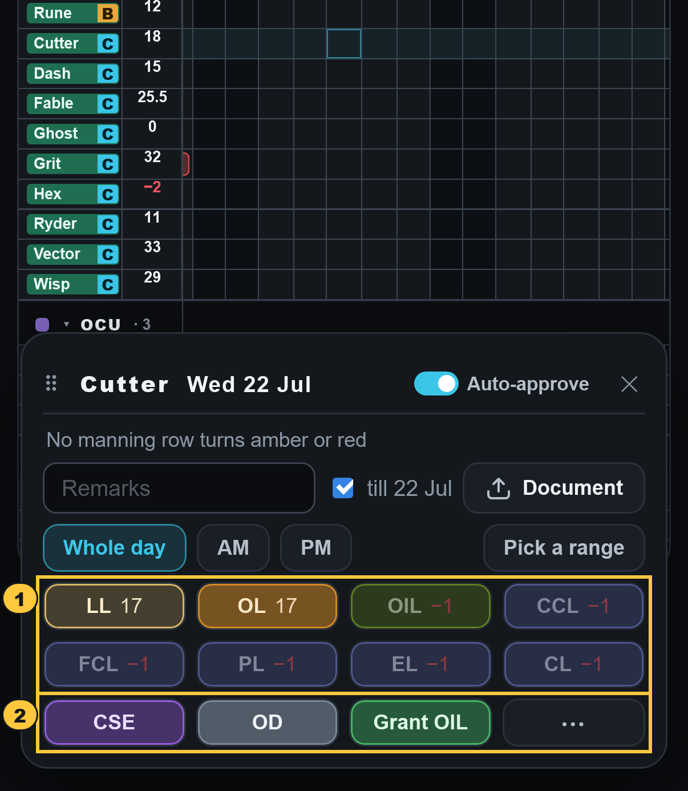
Today, and kept.1 The leave buttons, each showing what is left. 2 CSE, OD, Grant OIL and ⋯. These stay the quick way in: one tap files it, as now.Proposed.3 ⋯ lists every other type the Inputs page's dropdown has, not only Attach and Other. Then nothing needs the Inputs page. A medical stays the man's own to file, as you ruled.
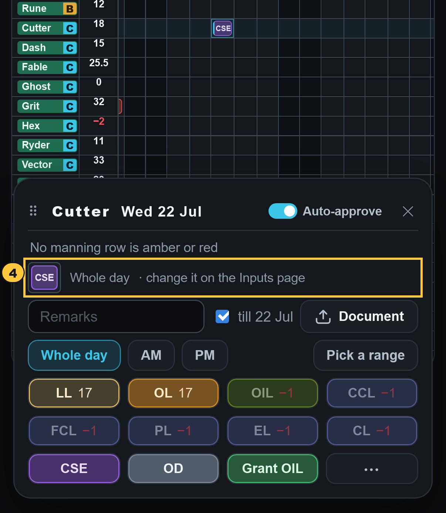
Today, after CSE.4 The window says "change it on the Inputs page". The course's title, its hours and any other people can only be added there.Proposed, after CSE.5 The course's own window opens right there over the grid: the same window as on the Inputs page and the schedule. 6 Its Type stays the dropdown. Add the title, hours, people or a paper, then Save.
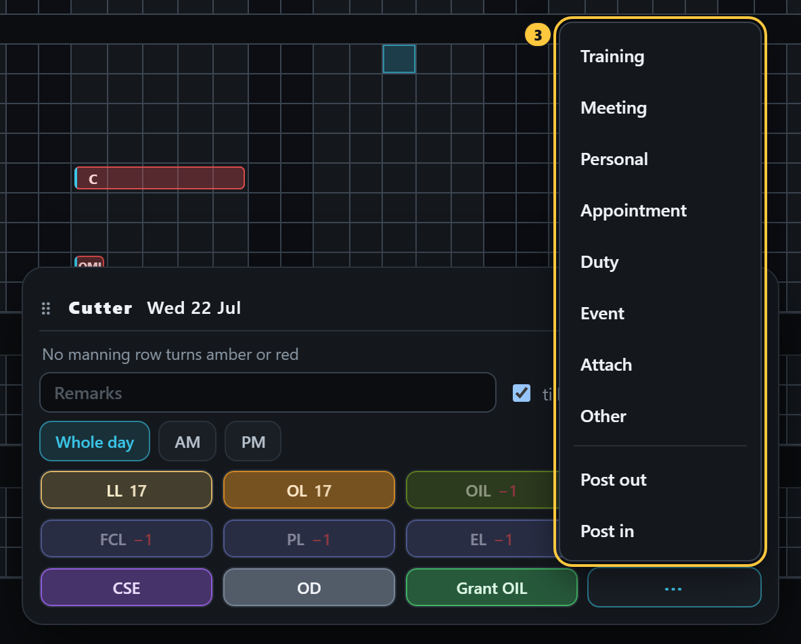
The same ⋯ on a desktop.
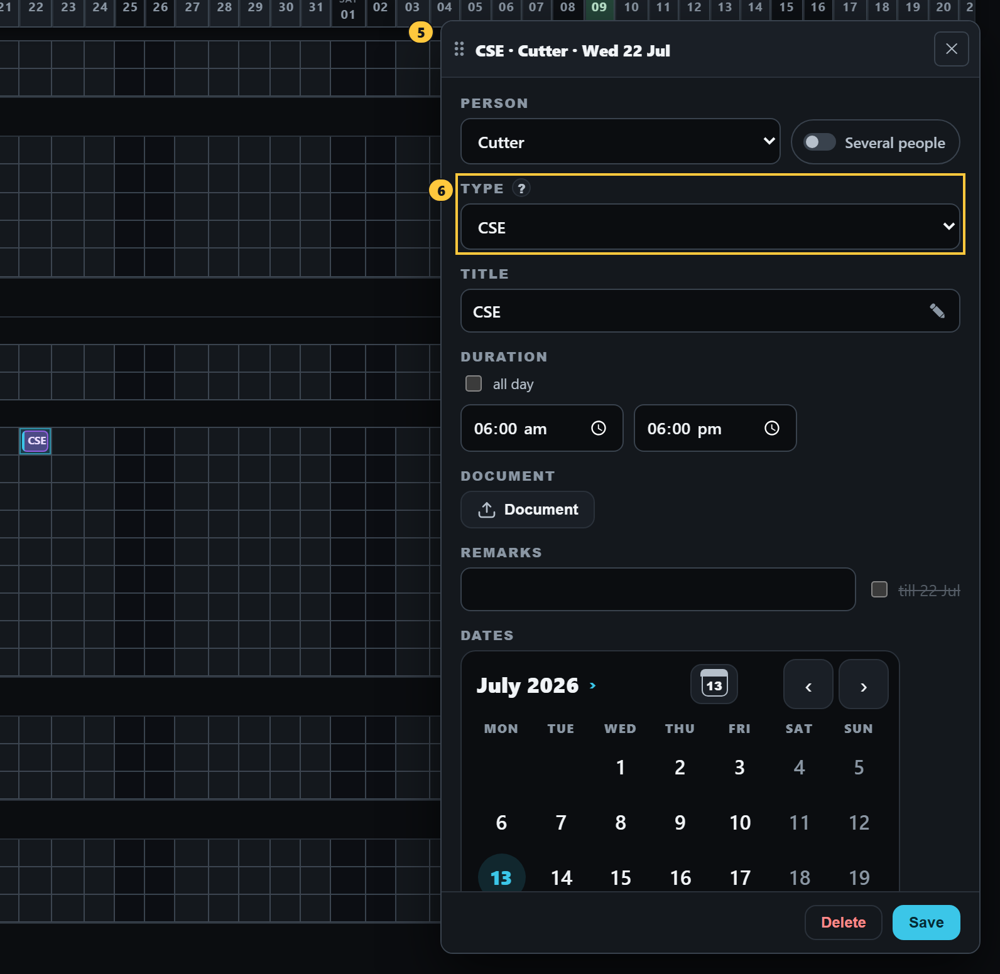
The course's window over the grid on a desktop.
One choice inside this: should every press open the window? Leave is usually done in one tap, so it stays one tap. A course, OD or anything from ⋯ usually needs a title or hours, so its window opens at once. You can close it if nothing more is needed.
Recommended: as drawn. The war keeps its quick buttons, ⋯ reaches every type, and a commitment's window opens right there, so the war never sends you to another page.
Step back
A · The direction: one item, the same on every page
Replaced by F1. This is the smaller stop on F1's road: steps 1 to 3 of the clean sheet.
You asked whether we are moving in the right direction. You said the Leave War is mostly for bidding, the Inputs page for members' day-to-day and last-minute inputs, and the schedule for your own last-minute planning. Fable and Astra each read the app on their own, then read each other's answer and agreed.
What they found. The three pages are right for their jobs. The confusion comes from four things:
What you can do depends on where a leave was first entered, not on what it is. A leave approved on the Leave War drags there. The same leave filed on the Inputs page says "change it on the Inputs page". If a member changes his war leave on the Inputs page, the Leave War quietly stops letting you move it.
Each page opens a different window for the same thing. The Inputs page opens the full window. The schedule opens it without the dates. The Leave War never opens it at all. About 15 different lines send you to another page.
A group is one thing on one page and several on another, and some actions split a man off without saying so. Typing a time on Cutter's Unavailable row takes him out of the group. So does Cutter saving a remark on his own Leave War box.
Three ways to say "when". The Leave War has whole day, AM and PM. Leave on the Inputs page also has custom times. An overseas duty or a course has an all-day tick and times, with no AM or PM. So an Attach filed for the morning on the war turns into "00:00–12:00" on the Inputs page.
Today, the Leave War: a leave filed on the Inputs page reads "change it on the Inputs page".Today, Edit Schedule: the same leave opened from Cutter's Unavailable row has no dates. It says "The dates are changed on the Inputs page." (marked 5).
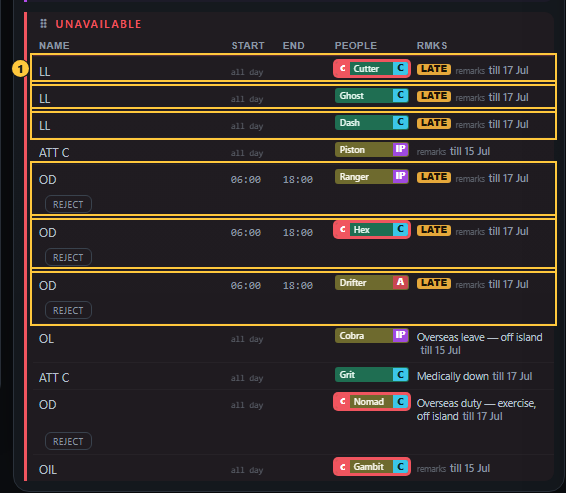
Today, Unavailable: one leave for three men shows as three rows, so it looks like three leaves.
The design they agreed, in five rules:
Tap = the item's own window, the same on every page. It opens over the page you're on, with the people, dates, time, remarks and papers, and closes back to where you were. No more "change it on the Inputs page".
Drag = move. On the Leave War and the Inputs calendar a drag moves its days. On the schedule a puck dragged changes who. Every drag also has a tap way.
What you can do depends on who you are, never on the page or where it was first entered. A member changes his own; an admin changes anyone's. A published day still waits for a signed amendment.
A group is one item everywhere, and nothing splits a man off by itself. One card, one row of pucks, and on the Leave War each man's box lights up with the group's when you tap one. Changing one man alone is one deliberate button, "Change for Cutter only" (question B).
One way to say "when" everywhere: whole day, AM, PM, or hours. A bid keeps whole day, AM and PM, and the Leave War grid still shows halves. Where an item has exact hours, its window shows how the Leave War counts it.
The Leave War stays where leave is bid for and decided, and a bid is still one man's. The Inputs page stays the everyday place to file. The schedule stays the scheduler's.
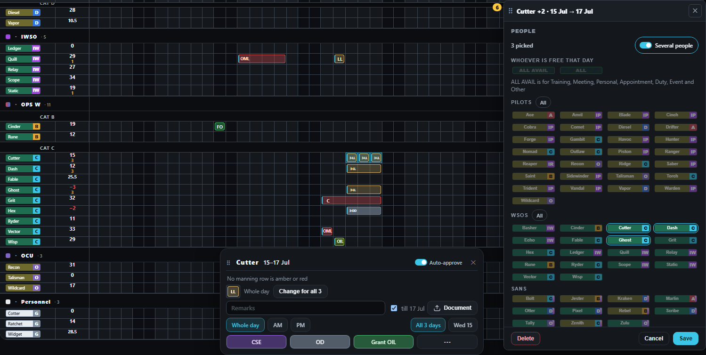
Step 1 looks like this: the leave's own window opens over the Leave War, the grid still behind it (drawn earlier for question 4).
The order to build it in, each step drawn for you first and checked in the running app:
One window from all three pages, with dates. The go-elsewhere lines go. This alone fixes three of your five examples.
Groups done properly: one row under Unavailable, the group lighting up on the Leave War, "Change for Cutter only", no silent splits.
One way to say "when": whole day, AM, PM or hours.
Drag everything on the Leave War, a group moving together.
Adding several people: on the Leave War, and with a range of days from the schedule.
Adding a man to leave that came from a bid (question E). Last.
What it changes from what you ruled before: your "no 'him only' button" (question B), and that an overseas duty or a course is whole days only on the Leave War and an Other's own times are set only on the Inputs page (question D). One point the readers still differ on: whether a Leave War box shows a small "shared" mark when nothing is tapped. Each moved to the other's view, so both will be drawn for you to pick.
Recommended: yes. Then I draw step 1 at your iPhone's size and a desktop's for your look before anything is built.
Step back
B · "Change for Cutter only" on every page
When: a stand-down leave is filed for six, and Cutter is recalled a day early. A few times a year, at short notice.
You asked for this button on the Leave War (questions 8 and 9 below). Both readers say it belongs on every page, so the rule is the same wherever you meet the group. On the Leave War it sits beside "Change for all 3 people", already named for the man you tapped. On the Inputs page and the schedule you tap his puck first. Pressing it takes him out of the group at once and opens his own leave for the change (your answer to question 9). One Undo puts him back.
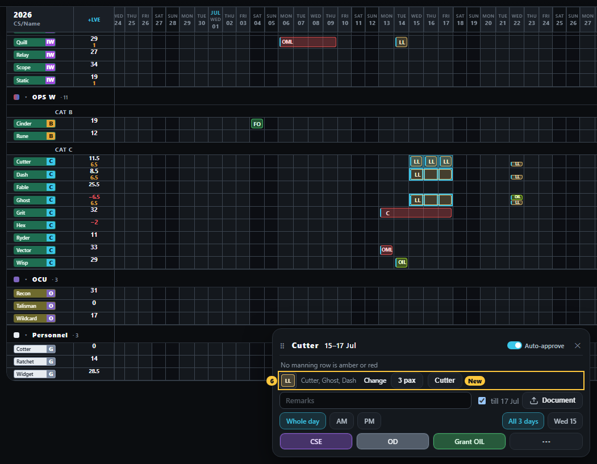
Redrawn your way: the word "Change", then two short buttons, "3 pax" and "Cutter". It fits one line.
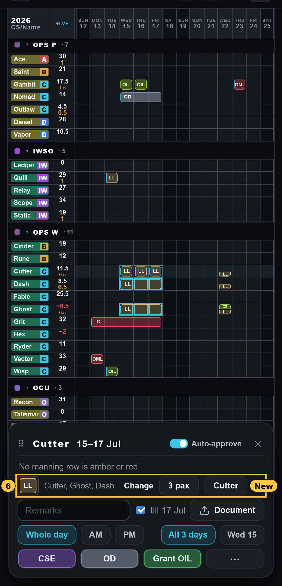
On your iPhone's size it fits one line too, so the window no longer grows a row.
A fresh reader checked the words: clear as drawn, "pax" kept as your word. One optional tweak: "Cutter only" on the second button would say he leaves the group. Your call; it's drawn as you asked.
Recommended: yes, on every page. One step instead of taking him out and filing him again, and there is never a moment where Cutter shows as not away.
Step back
C · A member drags his own approved leave on the Leave War
When: Ghost's leave for March was approved in the January bidding. In February his flight commander says yes to shifting it a day, and Ghost is looking at the Leave War.
Today he can only change its remarks there, but on the Inputs page he can move it freely. Proposed: he drags it on the Leave War and it just moves, keeping its approval, as it does on the Inputs page. A member in someone else's group still can't move everyone.
Recommended: yes. The same right on both pages. If you would rather a moved leave wait for approval again, that should hold on both pages, not one.
Step back
D · An overseas duty or a course works the same everywhere
When: a six-man detachment is filed months ahead, or a course takes only one morning.
Today six men dragged on the Leave War for one overseas duty make six separate items, while on the Inputs page "Several people" makes one. Later, changing its dates is six jobs or one, depending on where it was filed. And on the Leave War an overseas duty or a course can only be whole days.
Recommended: yes. Several men filed together make one item on both pages, and morning, afternoon or hours are offered on every page, starting on whole day. Leave bids stay one man each.
Step back
E · Adding a man to leave that came from someone's approved bid
When: Ranger's approved week turns into a stand-down, and three more men join it.
Today a leave approved from a bid stays one man's and refuses a second. Proposed: an admin may add men to it. They are recorded as added by the admin, Ranger keeps his own approval, and sending Ranger's leave back to a bid affects only Ranger.
Recommended: yes, built last. Otherwise where a leave was first entered still decides what you can do with it.
8 · Your "Change Cutter's only" button on the Leave War
When: an admin on the Leave War taps Cutter's box of a leave filed for Cutter, Ghost and Dash, because only Cutter's days need to change. Say his leave is cut short by a day, and Ghost and Dash keep theirs. Not often: a few times in a war.
You asked for a second button beside "Change for all 3 people". A fresh reader kept the pair alike, so it reads Change for Cutter only. Your "Change Cutter's only" left open "Cutter's what?". Pressing it gives Cutter a leave of his own: the same type, days and OIL answer, and his own paper if he has one. His new leave's window then opens over the war, so you can change his days. Ghost and Dash are not touched.
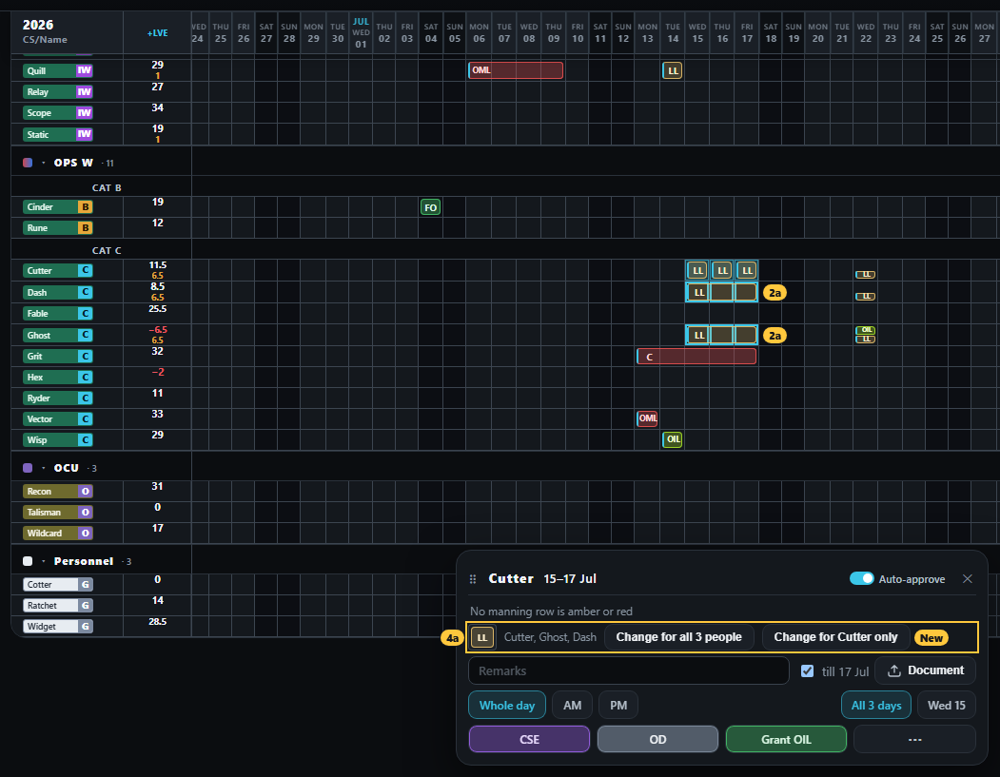
The tap on Cutter's box: Ghost's and Dash's boxes light up (question 3's B), and the line has both buttons.
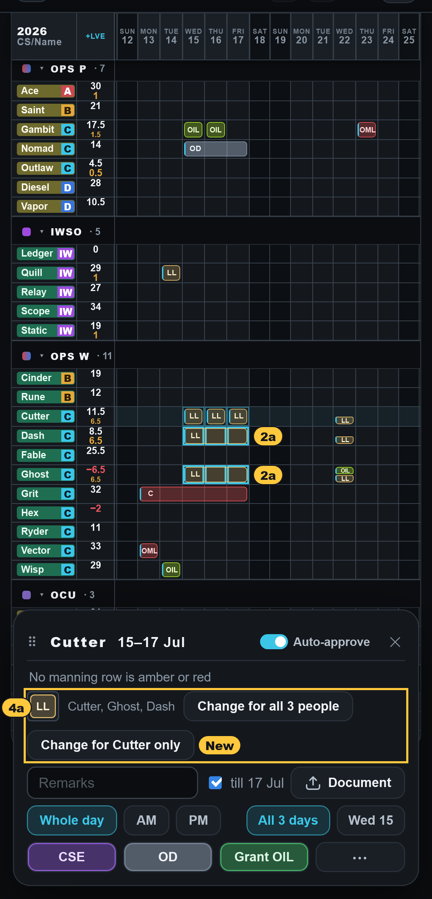
On your iPhone's size the two don't fit side by side. "Change for Cutter only" goes on a line of its own and the window grows by one row.
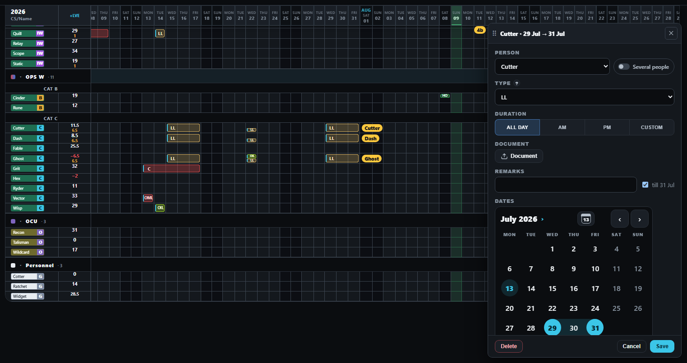
After the press: Cutter's own leave, with its own window over the war, ready for his new days. Ghost's and Dash's leave stays as one.
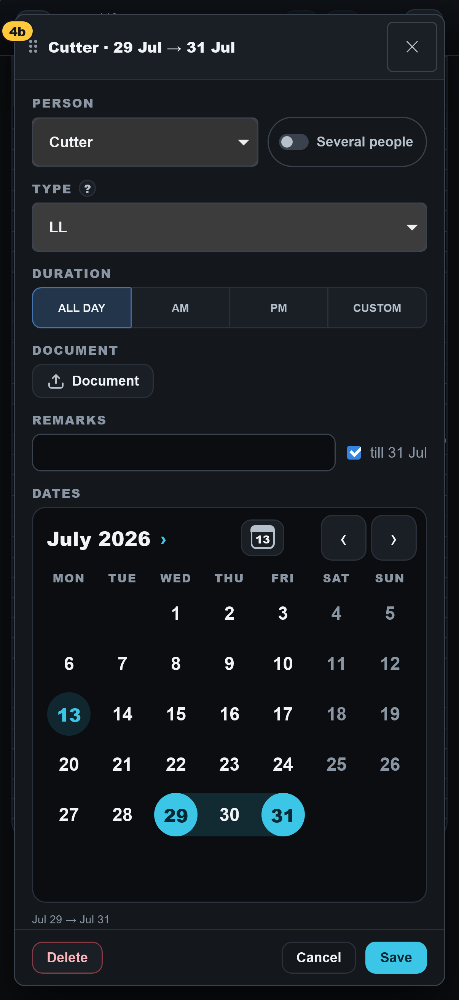
The same on your iPhone's size. The window covers the screen there, as the app's windows do on a phone.
What it changes: you ruled twice that there is no "him only" button (26 Nov). One man was to be taken out of the group and given a new leave by hand. This button does those two steps in one, on the Leave War only. On Edit Schedule and the Inputs page you would still file him a separate leave.
Recommended: yes, on the Leave War only. The war is where one man's days get changed most, and the button saves the delete-and-file-again round. Elsewhere the two steps stay, as you ruled.
9 · When that button takes Cutter out of the group
When: right after an admin presses "Change for Cutter only", whether or not they go on to change anything.
The fresh reader found a catch. If Cutter is taken out the moment the button is pressed, an admin who presses it, changes nothing and closes the window still finds Cutter on a leave of his own. Only Undo would put him back.
A, at the press: he leaves the group at once. Cancel leaves him on his own leave, the same days as before.
B, on Save: the window opens with his copy of the leave. Save gives him his own leave with the change. Cancel or ✕ leaves him in the group, as if nothing was pressed.
Your answer (27 Nov): A. Pressing the button takes Cutter out of the group at once; closed with nothing changed, he stays on his own leave, and one Undo puts him back.
1 · The one row under Unavailable
When: every day the schedule is planned. An admin files one overseas duty or one leave for several men, and the scheduler sees it under Unavailable.
Today a group's overseas duty or leave shows one row a man, so it looks like three separate inputs, though Reject on any one row takes it out for all three. Proposed: one row, everyone's pucks on it, one time, remark and Reject, and an empty place at the end to drop a man on to add him. A drop on a man's puck swaps him. Medical stays one row a man.
Edit Schedule, today: the LL for Cutter, Ghost and Dash is three rows; the OD for Ranger, Hex and Drifter is three rows, each with its own Reject.
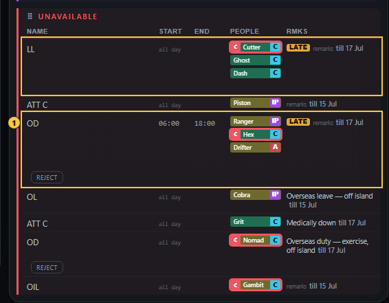
Proposed: each is one row, the pucks one under another (this column is one puck wide), one Reject.
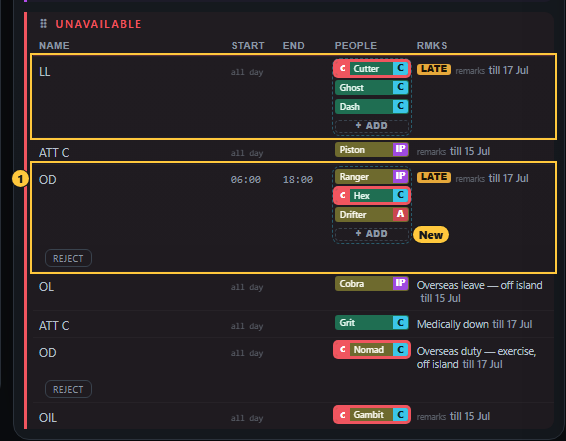
The empty place to add a man shows only while a puck is being carried, as on a Ground Programme row today.
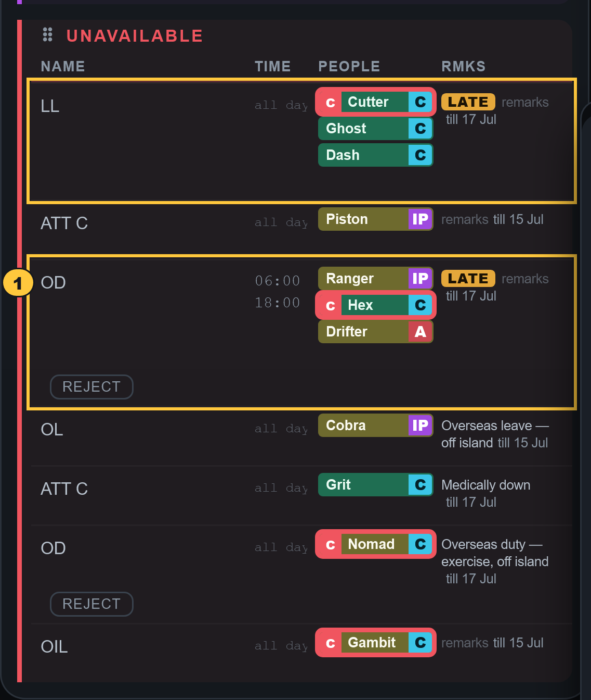
The same on your iPhone's size.
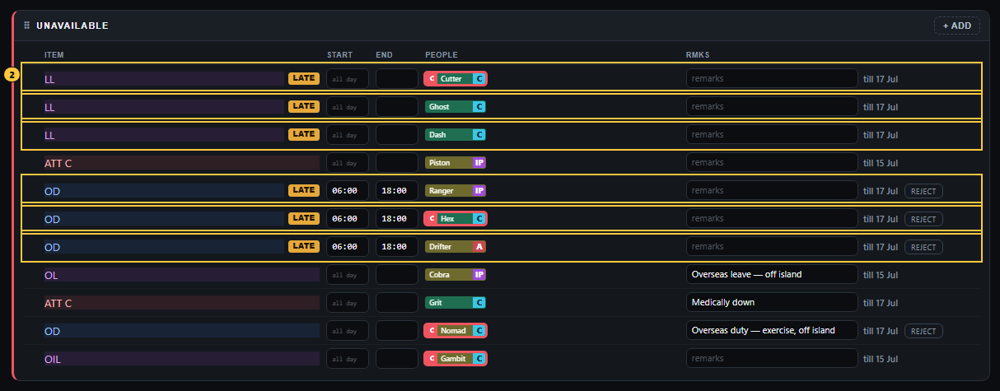
The Scheduler Board, today.
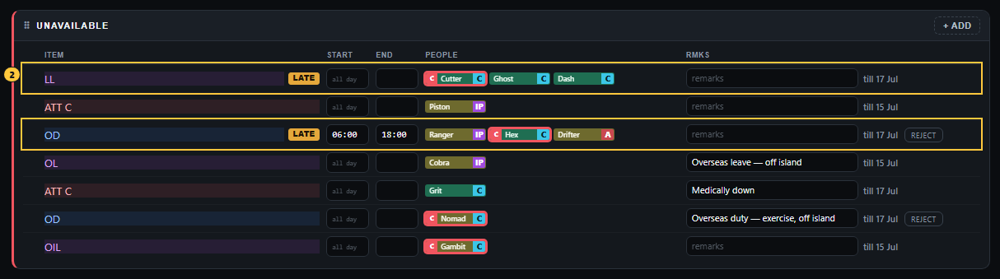
The Scheduler Board, proposed: the pucks sit side by side here.
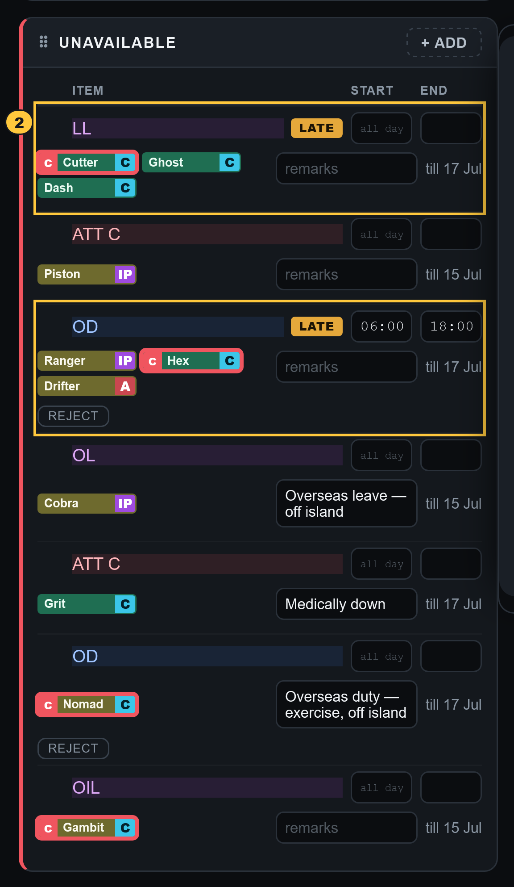
The Scheduler Board on your iPhone's size, proposed.
Recommended: build it as drawn. The rows get shorter (the overseas duty goes from three rows to one), and nothing can be mistaken for one man's input.
2 · The three "Blocked" notes
When: a scheduler drags a man onto a row that cannot take him. Today a drop on a medical swaps the man without a word, and a drop on a Personal Inputs line does nothing and says nothing.
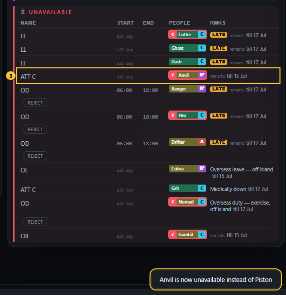
Today: Anvil dropped on Piston's ATT C took his medical: "Anvil is now unavailable instead of Piston".
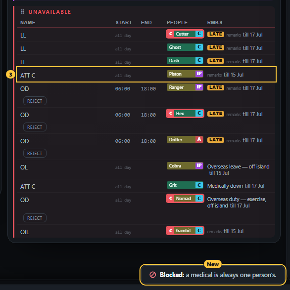
Proposed: refused with the app's grey "Blocked" note. Piston stays.
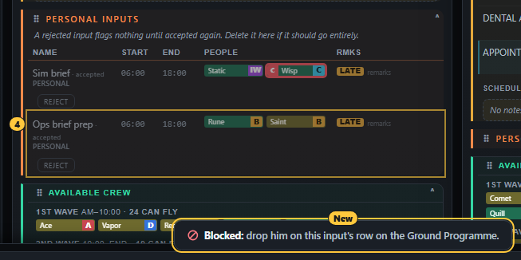
A drop on a Personal Inputs line whose input is on the Ground Programme.
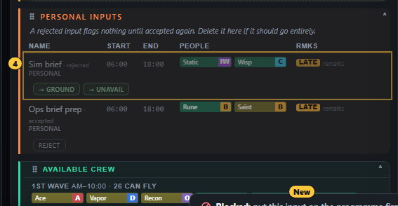
A drop on a Personal Inputs line still waiting, with no Ground Programme row yet.
The pictures show the first drafts. A fresh reader adjusted the words; these are the ones to build:
Medical: Blocked: a medical entry is always one person's
Personal Inputs, input on the programme: Blocked: change who is in this input on its Ground Programme row
Personal Inputs, input still waiting: Blocked: this input has no Ground Programme row yet. Accept it first.
Recommended: these words.
3 · The shared mark on the Leave War
When: an admin looks across the Leave War grid and needs to see that a box is part of a group's leave, not the man's own.
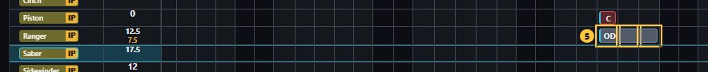
Today: each man's box reads "OD" or "LL", nothing says it is shared.Drawn: "3·LL", the Inputs calendar's way of marking a shared bar. At the grid's box size it is very small.
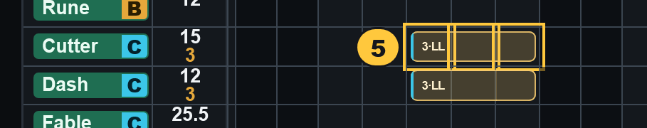
The same on your iPhone's size.
Two things found while drawing: a SANS man has no row on the Leave War, so a group of 3 with one SANS man shows "3" on only two rows. And a group of 10 or more, or a three-letter kind like OIL or CSE, does not fit the box at all.
Your half-day question, drawn. A correction first: a half day does not split the box left and right, it stacks top and bottom, so "3·LL" does fit in a half box. But it is tiny, about 8px tall.
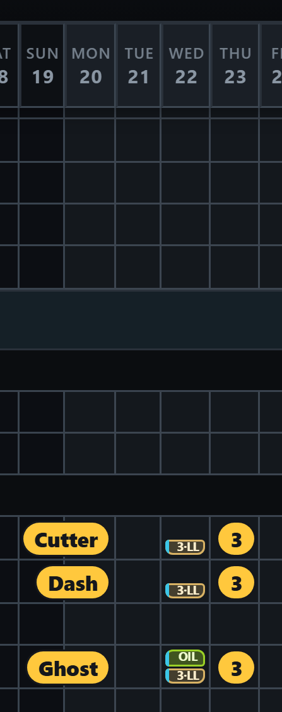
Choice A: "3·LL" written in the box. Ghost has OIL in the morning and the group leave in the afternoon. It fits, but it's very small even enlarged here.
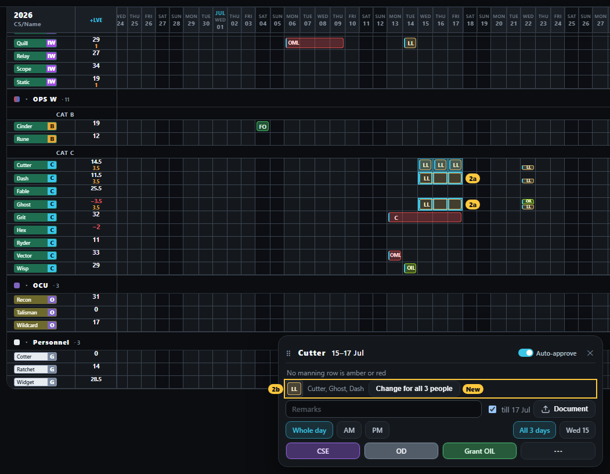
Choice B: nothing written in the box. A tap on Cutter's box rings Dash's and Ghost's boxes of the same leave, and the window names all three, with "Change for all 3 people".
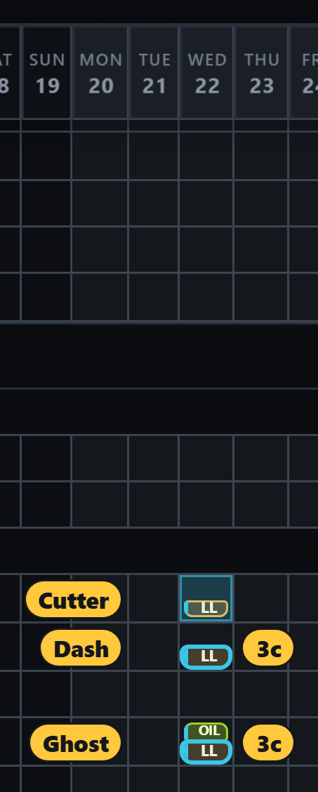
Choice B on a half day: only the afternoon box is ringed. The ring touches the morning OIL's edge.
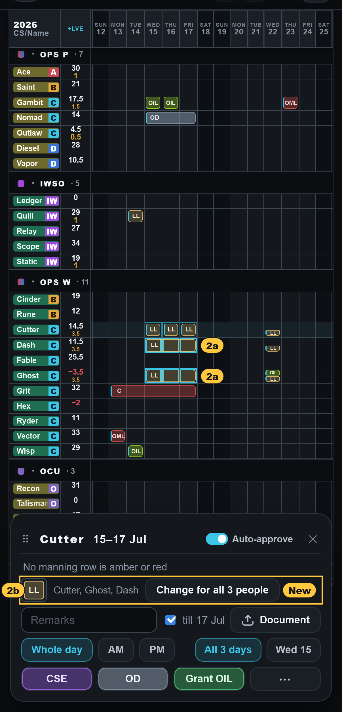
Choice B on your iPhone's size.
Choice B's ring would stay while the window is open, where the war's ring fades after six seconds today. That is a small new behaviour.
Recommended: B. The grid stays as easy to read as today, and you see the whole group before any change, since every change on the war starts with that tap. What you give up: the grid at rest doesn't show which boxes are shared.
4 · A tap on a group leave on the Leave War
When: an admin on the Leave War taps one man's box of a leave filed for several, to move it or change it.
You ruled that a group leave changes as one, for everyone. Proposed: the tap still opens the war's own window, which keeps the manning line and Grant OIL. Its line for the group leave becomes a button that opens the input's own window over the war, where a change is for everyone.
Today: the line reads "LL · Whole day · change it on the Inputs page".
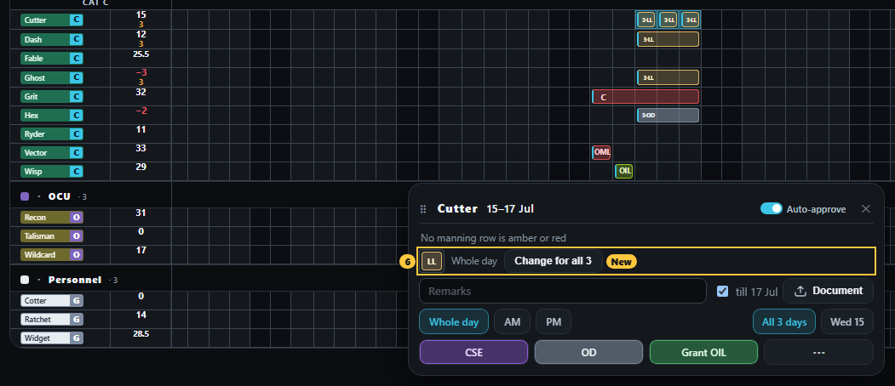
Proposed: a button on that line. Drawn as "Change for all 3"; the adjusted words are "Change for all 3 people", since "all 3" alone could read as 3 days.The button opens the group leave's own window over the war, the grid still behind it.
Recommended: yes, as drawn, with "Change for all 3 people". The admin keeps the grid and the war's help in view and is never sent off to another page.
5 · Swapping one man for another on a leave
When: a scheduler drags Hex onto Ranger's puck on a leave row under Unavailable, which your new rule allows with no question.
Today a swap keeps the whole record and changes only the name. So Hex would take over Ranger's remark, his "till" tick, any paper attached (a compassionate or paternity paper, say) and the "approved on the Leave War" tag, and his leave balance would be charged for a leave he never asked for.
Recommended: on a swap only the leave type and the days pass to the new man. The remark, papers and approval tag stay behind and go with Ranger's removal. See the leave row in picture 1.
6 · Papers on a group leave
When: a man in a group leave (a stand-down, say) needs to attach a paper for his own reason.
A group leave is one input, so a paper on it would belong to the whole group: one man's compassionate paper readable by the other five, and the Inputs list showing "has a document" for all six.
Your answer (26 Nov): B. A group leave may hold several papers, each marked as one man's and opened only by him and the admins; the others in the group never open it. Who may see what changes, so it gets an extra security check before it is built.
7 · A medical or a posting-out over one man of a group leave
When: one man of a six-man stand-down goes sick on its second day, or is posted out during it.
You ruled that the war never splits a man off by itself. But two other things do today, and must: a medical filed over his days, and a posting-out. Without the split, his sick day would cut the leave of all six.
Recommended: "never by itself" means never by a change made on his box. A medical over his days and his posting-out still give him his own leave, and his row then stands under the group's.
Next round, after these answers
A leave approved on the Leave War is one man's today and refuses a second man, so its row would show an add place that always says no.
A member in a group leave can no longer add his own remark there; who may change what.
A drag on the war across only some men of a group leave.
The bell's words when a leave passes from one man to another.
What the bell check found with no rule to judge by: leave entered for a man without Auto-approve tells him nothing; OL placed over his waiting LL doesn't say the LL went; a man put on a calendar note is told nothing; an Other for the morning doesn't say AM.